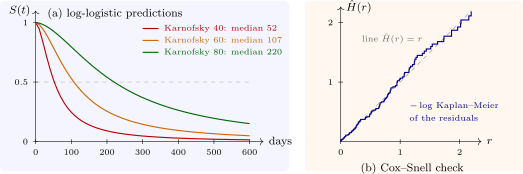

10.3 Log-normal and log-logistic models
When the hazard rises and then falls, as after surgery or for some cancers, the Weibull cannot follow it and the log-normal or log-logistic models are used. The log-logistic survivor function is \[ S(t \mid x) = \frac {1}{1 + \big (te^{-\mu - \beta ^{\mathsf T}x}\big )^{\alpha }} , \qquad \alpha = \frac 1\sigma , \] and its hazard, \(h(t) = \alpha t^{\alpha -1}e^{-\alpha m}/\{1 + (te^{-m})^{\alpha }\}\) with \(m = \mu + \beta ^{\mathsf T}x\), decreases from the start when \(\alpha \le 1\) and, when \(\alpha > 1\), rises to a peak at \(t = (\alpha - 1)^{1/\alpha }e^{m}\) and then falls. The odds of failure by time \(t\) are \[ \frac {1 - S(t \mid x)}{S(t \mid x)} = t^{\alpha }e^{-\alpha \mu }\,e^{-\alpha \beta ^{\mathsf T}x} , \] so covariates multiply these odds by \(e^{-\alpha \beta _j}\) at every \(t\): the log-logistic AFT model is also a proportional odds model, the analogue for odds of the Weibull’s double role. The log-normal model has a similar hazard shape and no such second reading, and is often close to the log-logistic in fit.
Example 10.3.1. The Cox model for the veteran trial violated proportional hazards (the section on checking proportional hazards). Fitting the same covariates, treatment, cell type and Karnofsky score, as AFT models gives AIC \(1445.7\) for the Weibull, \(1445.8\) for the log-normal and \(1439.1\) for the log-logistic, which is preferred (Software 10.5.2). Its scale is \(\hat \sigma = 0.581\), so \(\hat \alpha = 1.72\) and the hazard rises and then falls. The time ratios are \(0.95\) for the test treatment (\(95\%\) interval \(0.67\) to \(1.34\)), \(0.50\) for small-cell, \(0.46\) for adenocarcinoma and \(0.97\) for large-cell against squamous tumours, and \(1.0366\) per Karnofsky point, or \(1.0366^{10} = 1.43\) for ten points: ten points more on the performance scale lengthen survival by \(43\%\). For a patient on the standard regimen with a squamous tumour, the predicted median survival is \(52\) days at a Karnofsky score of \(40\), \(107\) days at \(60\) and \(220\) days at \(80\) (Figure 10), and the hazard at a score of \(60\) peaks at \(0.827 \times 107 = 89\) days.

Questions on this section
Stuck on something here? Ask below and it stays attached to this topic.